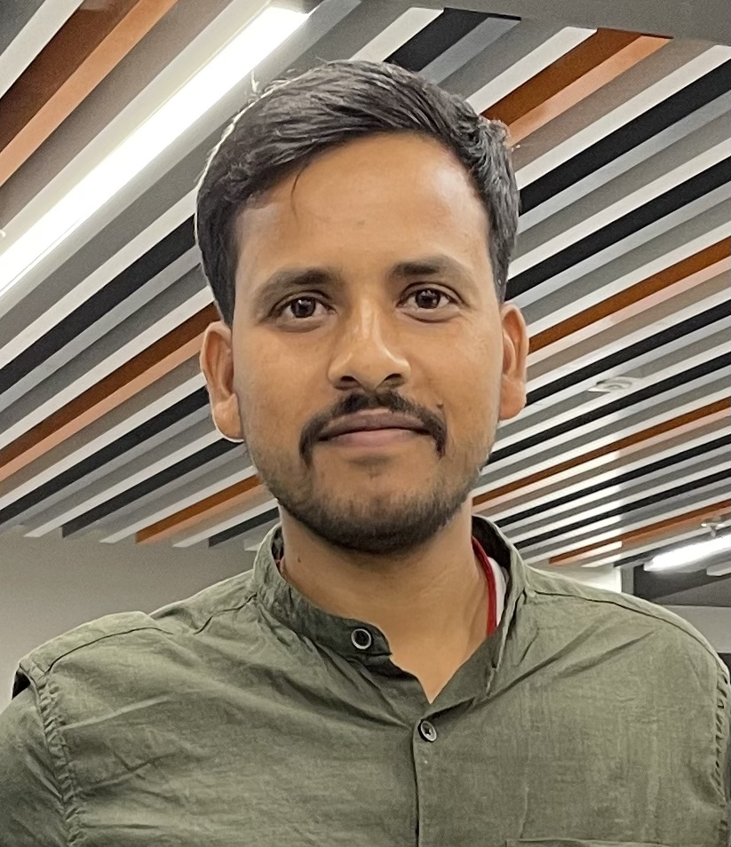

About Me

Hello! I work as a Senior Machine learning Engineer at the jobiak.
I specialise in working on different projects related to text data, HRtech, health-care
I have a M.Tech degree in CSE from IIT Guwahati, where I have worked in '.
Active Research Areas: Audio Question Answering, Automated Audio Captioning, Language Based Audio Retrieval, Adversarial Attacks on Deep Models, Large Language Models, Legal AI.
News & Update
- June 2023: Awesome Audio Question Answering [Link]
- Nov 2023: Awesome Audio Visual Question Answering [Link]
Areas of Expertise
- NLP: Conversational AI, Document Summarization, Sentiment Analysis, Machine Translation, Question Answering, Named Entity Recognition, Semantic Role Labeling, Cross-Lingual Understanding, Low-Resource Language Processing, Adversarial Attacks and Defenses, Generative AI, and Large Language Models (LLM).
- Audio: Multimodal Audio Analysis, Sound Event Detection and Classification, Automatic Audio Captioning, Language-Based Audio Retrieval, Audio Question Answering, Adversarial Attacks and Defenses in Audio, Generative Audio Models, Music Information Retrieval, and Environmental Sound Analysis.
- Computer Vision: Image Captioning, Visual Question Answering, Audio Visual Question Answering, Transfer Learning and Pretrained Models, and Cross-Modal Integration.
Experience
Senior Research Scientist, Reliance Jio AICoE, Hyderabad, India (Sep 2021 - Present)
- Call Audit Automation
- Details: Automated system for extracting both speech and text-based analytics from the daily influx of calls received at the call center.
- Contributions: Established a pipeline dedicated to collecting, processing, normalizing, and augmenting call center text data. Trained probabilistic language models for ASR systems, leveraging the generated text. Executed sentiment analysis with reasoning on call center call transcripts to uncover customer and agent sentiments as well as reasons both during and after calls, with the aim of enhancing the overall customer experience.
- RF Hospital ASR
- Details: A tool created to assist doctors in converting spoken patient information into written notes.
- Contributions: Set up a dedicated pipeline for the collection, processing, normalization, and augmentation of clinical text data. Trained probabilistic language models to enhance ASR systems, using the generated text data.
- PDF Chatbot
- Details: LLM-powered chatbot system specialized in processing and extracting information from PDF documents. It allows users to ask questions, give commands, or obtain feedback from their PDF files.
- Contributions: Executed the project's end-to-end implementation, covering chatbot architecture design, NLP integration, and PDF parsing capabilities. The chatbot efficiently extracts, interprets, and provides information from PDF files, streamlining document retrieval and enhancing user experiences with large volumes of PDF data.
- Text to SQL
- Details: AI system powered by LLM for converting user queries in natural language into SQL queries. It enables users to express their database queries in plain language, improving query accessibility and usability.
- Contributions: Developed two frameworks utilizing LLM for Text to SQL conversion. Designed the architecture, integrated NLP techniques, and optimized the models for accurate SQL query generation.
- RASA Voice Bot
- Details: A voice-bot capable of engaging in human-like dialogue, capturing context, and delivering intelligent responses.
- Contributions: Developed a voice assistant by using the RASA framework. This involved creating conversational models, context management, and integration of natural language understanding for contextual responses.
Research Intern, Reliance Jio AICoE, Hyderabad, India (June 2021 - Aug 2021)
- Cricket Analytics for Mumbai Indians: Developed an end-to-end framework for cricket text commentary collection (from ESPNcricinfo and IPLT20 websites), processing, normalization, and augmentation for ASR.
Teaching Assistant, IIT Guwahati, India (July 2013 - Dec 2020)
- Courses: Software Engineering (Fall-2018, Fall-2019), Design and Analysis of Algorithms (Fall-2017), Computer Vision using Machine Learning (Fall-2016), Discrete Mathematics (Fall-2015), Probability and Linear Algebra (Spring-2014), Data Communication (Fall-2013).
- Labs: Database (Spring-2015, Spring-2016, Spring-2020, Fall-2020), Computing (Spring-2017, Spring-2018, Spring-2019), Data Structures (Fall-2014).
Patent
Web Applications
Education
- PhD in Computer Science and Engineering, IIT Guwahati, India, July 2015 - Sept 2021
- Thesis: Learning Player-specific Strategies using Cricket Text Commentary.
- M.Tech in Computer Science and Engineering, IIT Guwahati, India, July 2013 - June 2015
- Thesis: Spectral Clustering Using Convex and Constrained Settings.
- B.Tech in Computer Science and Engineering, VSSUT, Burla, India, July 2008 - June 2012
- Thesis: A Novel Ontology Based Entity Relationship Model.
Programming Skills
- Languages:Python,C++,SQL.
- Others: Django, Pandas, Numpy, Matplotlib, Tableau, Scikit-learn, Tensorflow, Keras, NLTK, PySpark, Docker, AWS, Beautiful Soup, MongoDB, kserve, Amazon EKS, Docker, bentoML, MLOps MLflow, Model Management, Prefect Dataflow Automation, AWS Kinesis, AWS Lambda, Grafana, Evidently, github action, Terraform, Flask.
Miscellaneous
- Grants and Fellowships: MHRD Government of India Fellowship for MTech
- GATE: Qualified in GATE 2015, 2016, 2017
- UGC-NET: Qualified for Assistant Professor by UGC-NET in July 2018.
- Worked as Teaching Assistant in Programming lab (C, Java) : Carried out my duties of conducting labs, checking codes of enrolled students and clarifying their lab related doubts
- Volunteered for Placements (2015 - 2016): Centre for Career Development, IIT Guwahati
- Email: jainendra@iitg.ac.in
- Address: Hitech City, Hyderabad, India